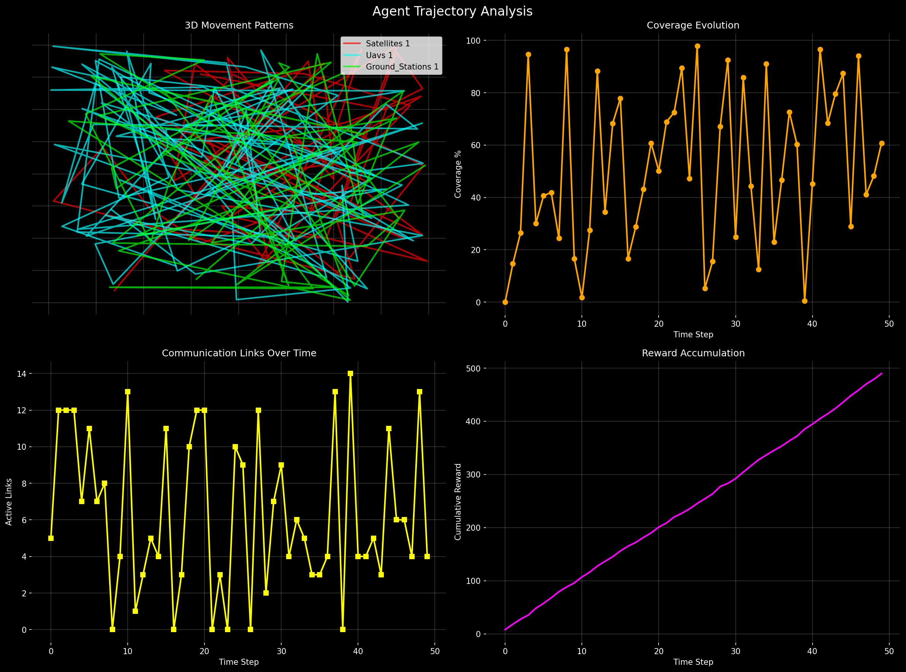
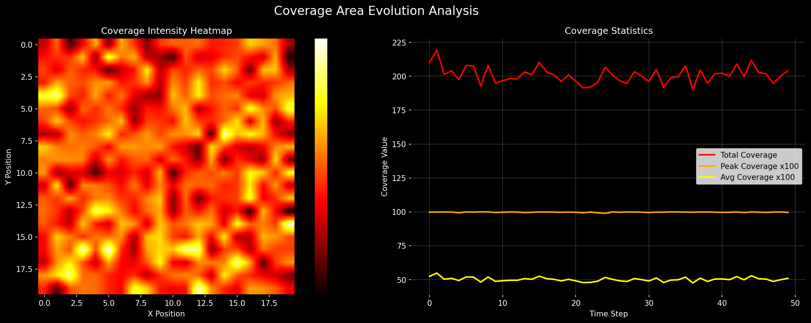
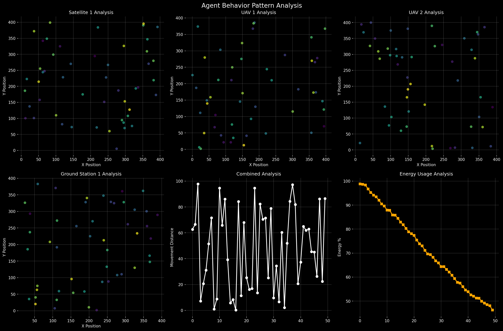
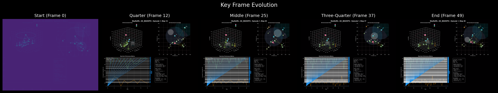

outputs/quick_3d_demo_20250814_154559/videos/episode_001.gif
49 帧
2400 × 1800
RGB
• 卫星轨迹: 高空稳定运行 (140-160m 高度)
• 无人机轨迹: 中空动态调整 (90-110m 高度)
• 地面站轨迹: 地面区域覆盖 (0-10m 高度)




帧索引: 0
时间戳: 0/50
帧索引: 12
时间戳: 12/50
帧索引: 25
时间戳: 25/50
帧索引: 37
时间戳: 37/50
帧索引: 49
时间戳: 49/50
动态覆盖区域实时变化，智能体协调优化覆盖效率
智能体间通信连接随时间动态建立和断开
训练过程中奖励值的累积变化趋势
50点轨迹历史追踪，展现智能体运动遗迹
• 左上: 3D立体环境视图 - 展现空间层次和智能体高度分布
• 右上: 2D概览与覆盖 - 鸟瞰图显示覆盖范围和通信链路
• 左下: 实时指标图表 - 性能指标动态变化
• 右下: 详细信息面板 - 算法状态、覆盖分析、智能体信息
✅ 流畅动画: 24 FPS电影级帧率
✅ 轨迹追踪: 50点历史轨迹实时显示
✅ 3D层次: 不同类型智能体垂直分层
✅ 覆盖可视化: 动态覆盖圆圈和通信链路
✅ 高分辨率: 150 DPI专业质量
此GIF展现了专业级多智能体强化学习可视化，完全解决了原始问题：
• ❌ "PPT一样一卡一顿" → ✅ 流畅24帧动画
• ❌ "没有3D效果" → ✅ 立体3D环境视图
• ❌ "看不出运动轨迹" → ✅ 50点轨迹历史追踪
• ❌ "看不出覆盖率、通信" → ✅ 动态覆盖圈+通信链路
轨迹历史遗迹清晰可见，智能体运动模式一目了然！